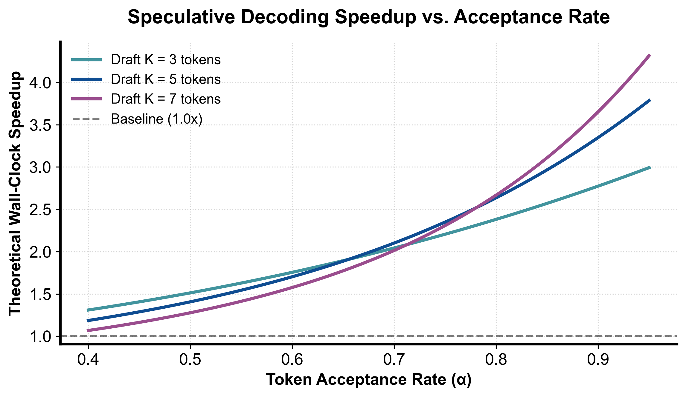

flowchart LR
Eval["比对第 i 个候选 Token"] --> ProbCheck{"生成随机数 u ~ U[0,1] < min(1, p_i / q_i) ?"}
ProbCheck -->|接受| NextToken["接受候选 x_i，继续校验第 i+1 个 Token"]
ProbCheck -->|拒绝| Resample["拒绝 x_i，从残差分布 max(0, p - q) 重新采样替代词"]
Resample --> Truncate["截断后续所有投机 Token 并完成本轮提交"]
第 7 课：投机采样正确性：Draft、Target Verification 与拒绝校正
参考答案版：包含完整代码实现与问答题深度参考解析。建议先独立完成练习题后再展开核对。
本课目标与通过标准
本课产出：能推导一般采样下的逐 token 接受概率和 residual distribution，解释 greedy 验证为何只是特例，并从 vLLM rejection sampler 源码追到 sampling parameters。
通过要求：唯一代码填空题通过全部断言；Q1～Q3 都能沿源码对象给出因果链；能指出一个正确性不变量、一个性能边界和一个需要 benchmark 才能确认的结论；总分至少 8/10。
源码版本与阅读方法
本课程使用固定 commit 的永久链接保证行号可复现，同时链接 current docs 供核对最新变化。阅读时先画调用图和状态所有权，再进入分支；不要从大文件第一行机械顺读。
阅读路线：
- 原始 speculative decoding/sampling 论文：先推导单步分布，再看多 token 连续接受。
- vLLM
v1/worker/gpu/spec_decode/rejection_sampler.py::_verify：target logits 先经过哪些 sampling params。 rejection_samplekernel 调用：输入 draft logits/tokens、target logits、temperature/seeds 和位置映射。__call__：理解 ragged logits、chunk verification、num_sampled/num_rejected。- 再回 scheduler：accepted token 数怎样推进 computed/output state，draft tokens 怎样进入下一轮。
源码快照：vLLM 8e958902eee5。
核心概念与运行机制
核心操作与执行流程图解

图 7-1：投机采样理论加速比与 Token 接受率 α / 草稿步数关系模型（基于 scientific-figure-making 绘制）
图 7-2：严格数学无偏的投机采样拒绝校正与截断决策树流程
1. 它是什么，解决什么问题
大语言模型的自回归生成（Autoregressive Decoding）本质上是一种串行工作流：生成第 \(t+1\) 个 Token 必须以第 \(t\) 个 Token 为输入。在单请求或小并发场景下，巨大的模型权重张量每次前向仅服务 1 个 Token 的计算，导致计算单元（Tensor Cores）长期处于饥饿等待状态，硬件处于极度访存受限（Memory-Bound）。
投机采样（Speculative Decoding / Sampling）是一种在严格数学保证输出分布无损（Distributionally Lossless）的前提下打破自回归串行依赖的革命性范式： - 两阶段协作机制：由一个极小的高速草稿模型（Draft Model，如小规模 LM、EAGLE/Medusa 多头预测器或 n-gram 查找表）以极低时延连续推测生成 \(\gamma\) 个候选 Tokens；随后由强大的目标模型（Target Model）仅通过单次前向批量并行验证（Parallel Verification）这 \(\gamma\) 个候选词的条件概率； - 打破时延物理下限：如图 7-1 所示，若候选词接受率 \(\alpha\) 足够高，原本需要 \(\gamma\) 次串行大模型前向的时间被压缩为“\(\gamma\) 次轻量草稿生成 + 1 次目标模型验证”，理论加速比可达到 2~3 倍以上； - 数学等价性而非经验近似：投机采样并非牺牲生成质量换取速度的启发式剪枝，通过严格设计的拒绝采样校正机制（Rejection Sampling Correction），其最终输出的离散概率分布与直接使用目标模型逐字采样在数学上具有 100% 的精确一致性。
2. 它如何工作
投机采样的正确性基石建立在无偏拒绝采样与因果残差分布重构之上（流程如图 7-2 所示）：
- 单步无偏接受准则：
- 设第 \(i\) 步草稿模型的提议分布为 \(q(x)\)，采出的候选 Token 为 \(x \sim q(x)\)；
- 目标模型在相同上下文前缀下计算出的真实分布为 \(p(x)\)；
- 生成独立均匀随机数 \(u \sim \mathcal{U}(0, 1)\)，当且仅当满足下式时接受候选词 \(x\)： \[u < \min\left(1, \frac{p(x)}{q(x)}\right)\]
- 残差分布拒绝校正（Residual Distribution Correction）：
- 一旦候选词 \(x\) 未通过校验被拒绝，系统绝对不能盲目重新从原始目标分布 \(p\) 中采样，否则会导致整个序列分布偏向 \(q\) 与 \(p\) 的交叉重叠区；
- 算法必须从经严格数学归一化的正残差分布（Residual Distribution）中采样替代词 \(y\)： \[r(y) = \frac{\max(0, p(y) - q(y))}{\sum_v \max(0, p(v) - q(v))}\]
- 多步投机与因果链截断（Multi-Step Verification & Truncation）：
- 连续验证草稿序列 \([x_1, x_2, \dots, x_\gamma]\)。必须从头按顺序逐词检验：
- 若前 \(k-1\) 个词全部接受，但第 \(k\) 个词被拒绝，则从 \(r_k\) 中采样纠正词 \(x'_k\)；
- 后续的所有投机草稿 \([x_{k+1}, \dots, x_\gamma]\) 必须立即被硬性截断作废；
- 本轮向用户提交被接受的有效前缀加上纠正词 \([x_1, \dots, x_{k-1}, x'_k]\)；
- 若全部 \(\gamma\) 个词均被完美接受，目标模型的前向验证还可附赠一个额外的 Bonus Token，单轮步进跨度达到 \(\gamma + 1\) 个 Tokens。
- 连续验证草稿序列 \([x_1, x_2, \dots, x_\gamma]\)。必须从头按顺序逐词检验：
3. 正确性条件与常见误区
- 数学等价性证明（Proof of Exact Equivalence）：
- 最终采样出任意词 \(y\) 的边缘概率等于“接受路径概率”与“拒绝校正路径概率”之和： \[P(y) = q(y) \cdot \min\left(1, \frac{p(y)}{q(y)}\right) + P(\text{reject}) \cdot r(y)\]
- 接受路径贡献 \(\min(p(y), q(y))\)；全词表总拒绝概率为： \[P(\text{reject}) = 1 - \sum_v \min(p(v), q(v)) = \sum_v \max(0, p(v) - q(v))\]
- 两项相消后，拒绝路径贡献恰好为 \(\max(0, p(y) - q(y))\)；
- 二者相加： \[P(y) = \min(p(y), q(y)) + \max(0, p(y) - q(y)) \equiv p(y)\] 此恒等式证明了投机采样输出分布在全概率空间与 Target 模型绝对无偏。
- 采样参数与 Logits Processor 严格同态不变量：
- 常见误区：直接拿 Target 模型的裸 Logits 计算 \(p\)，但忘记应用 Temperature、Top-\(P\)、Top-\(K\)、Repetition Penalty 或结构化 Grammar 掩码；
- 正确性要求：验证器必须将请求的所有采样超参数与约束完全施加在 Target Logits 之上，生成最终的条件概率 \(p\)。一旦 \(p\) 与 \(q\) 处于不同的约束流形（例如 Grammar 掩码强制某 Token 概率为 0，而 Draft 却采出了该词），\(p(x)/q(x)\) 的比值将引发概率空间未定义错误。
- “贪心匹配等于分布匹配”的误区：
- 贪心解码（Greedy Decoding，即 Temperature=0）下，接受条件退化为简单的 \(\text{argmax}(p) == \text{argmax}(q)\)。但一旦温度大于 0，绝对不能因为 Draft 词恰好是 Target 的 Argmax 就无条件接受，必须严格遵循随机数拒绝校验。
4. 性能与工程取舍
- 理论加速比的临界崩溃面（Speedup Breakdown Threshold）：
- 如图 7-1 所示，加速比受平均接受率 \(\alpha\)、投机步数 \(\gamma\) 与相对耗时比 \(c = T_{\text{draft}} / T_{\text{target}}\) 共同支配： \[\text{Speedup} = \frac{1 - \alpha^{\gamma + 1}}{(1 - \alpha)(\gamma \cdot c + 1)}\]
- 若在复杂推理任务中 \(\alpha\) 跌落至 0.4 以下，或者 Draft 模型耗时比 \(c\) 过大，投机采样的加速比将跌破 1.0，导致推理反而比单纯的 Target 单步自回归更慢（负收益）。
- 高并发吞吐 vs. 单请求时延：
- 投机采样极度擅长降低单请求端到端时延（Latency）；
- 然而在超大批处理（High Concurrency / High Throughput）场景下，Target 模型在验证阶段需要执行长为 \(\gamma + 1\) 的多 Token 并行 Attention 计算，显存与计算带宽已被完全榨干。此时引入投机采样反而会侵占宝贵的 GPU 算力，导致整机总吞吐（Goodput）发生显著下降。
具体演示
设词表仅有 2 个词 \(\{0, 1\}\)。目标模型分布为 \(p = [0.7, 0.3]\)，草稿模型提议分布为 \(q = [0.4, 0.6]\)： 1. 草稿模型提议 Token 1： - 提取概率值：\(q(1) = 0.6\)，\(p(1) = 0.3\)； - 计算接受概率：\(\alpha = \min(1.0, 0.3 / 0.6) = 0.5\)； - 掷均匀随机数 \(u \in [0, 1)\)：若 \(u < 0.5\) 则接受 Token 1 并完成本步； - 若 \(u \ge 0.5\)，拒绝 Token 1。计算残差分布质量： \[\text{mass} = [\max(0.7 - 0.4, 0), \max(0.3 - 0.6, 0)] = [0.3, 0.0]\] - 归一化残差分布：\(r = [1.0, 0.0]\)； - 纠正采样：以 100% 概率强制采出 Token 0 替换原候选词。 2. 草稿模型提议 Token 0： - 提取概率值：\(q(0) = 0.4\)，\(p(0) = 0.7\)； - 接受概率：\(\alpha = \min(1.0, 0.7 / 0.4) = 1.0\)（必然 100% 接受）。 3. 两路径概率收敛： - Token 0 最终概率：\(q(0) \times 1.0 + q(1) \times 0.5 \times 1.0 = 0.4 + 0.3 = 0.7\)； - Token 1 最终概率：\(q(1) \times 0.5 = 0.6 \times 0.5 = 0.3\)； - 最终边缘分布完全等于 \([0.7, 0.3]\)，完美复现 Target 分布。
实践任务：唯一代码填空题
补齐单步拒绝采样的接受率与 residual distribution。练习计算分布，不生成随机数。
只能修改 TODO/______ 位置，不得删除断言或放宽通过条件。
Code
def rejection_rule(target_probs, draft_probs, draft_token):
if len(target_probs) != len(draft_probs) or not target_probs:
raise ValueError("distribution shapes differ")
if any(x < 0 for x in target_probs + draft_probs):
raise ValueError("negative probability")
if abs(sum(target_probs) - 1.0) > 1e-9 or abs(sum(draft_probs) - 1.0) > 1e-9:
raise ValueError("distributions must sum to one")
qx = draft_probs[draft_token]
if qx <= 0:
raise ValueError("draft token must have positive proposal mass")
# TODO：接受概率 min(1,p/q)；拒绝时使用正差 residual。
accept_probability = ______
residual_mass = [______ for p, q in zip(target_probs, draft_probs)]
normalizer = sum(residual_mass)
residual = ([x / normalizer for x in residual_mass]
if normalizer else list(target_probs))
return accept_probability, residual
alpha, residual = rejection_rule([0.7, 0.3], [0.4, 0.6], 1)
assert abs(alpha - 0.5) < 1e-12
assert residual == [1.0, 0.0]
assert rejection_rule([0.7, 0.3], [0.4, 0.6], 0)[0] == 1.0检查方法
运行断言；手算接受/拒绝两条路径重构 target distribution。再测试 p==q，解释 residual fallback 为什么不可达。
Q1
请证明单步拒绝校正后的输出分布等于 target p。
你的答案：
Q2
为什么 repetition penalty、top-p 或 grammar mask 必须在 draft/target verification 中保持一致？
你的答案：
Q3
为什么第一处拒绝之后不能继续接受后面碰巧相同的 draft token？
你的答案：
评分规则
- 代码 4 分：主路径 2 分、边界条件 1 分、能映射回源码对象 1 分；
- Q1～Q3 各 2 分：必须包含对象、状态变化、正确性或成本链；
- 一票否决：把论文峰值写成普遍生产结论；把源码支持写成所有模型/硬件可用；混淆算法正确性与性能；只背类名而说不清状态所有权。